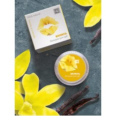

Магазин натуральной косметики.
Главная
Вода косметическая
Бальзам для губ "Ваниль" 5гр

Об этом бальзаме:
100% натуральная формула интенсивно питает,
увлажняет и смягчает нежную кожу губ, защищает их от сухости,
трещин, шелушения и неблагоприятных погодных условий
(солнце, ветер, мороз)
Состав:
Масла макадамии, персиковое, миндальное, кокоса,
пчелиный воск, масла касторовое, ши , ланолин, воск риса,
воск карнаубский, витамин Е, экстракты ванили, облепихи,
ромашки, масло эфирное грейпфрута.
Применение:
Нанести бальзам тонким слоем на кожу губ.
повторять процедуру по мере необходимости.
Противопоказания:
Индивидуальная непереносимость к одному из компонентов бальзама.
«Все права защищены»